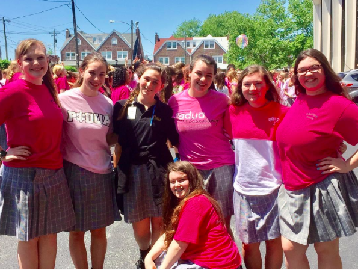
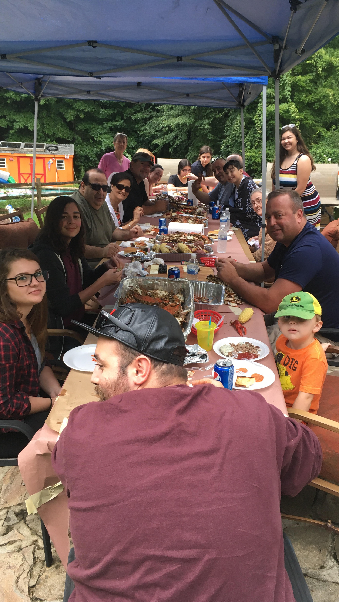

One of my favorite things is my friends. In only a few months at Padua I was able to befriend a great group of girls with whom I am super close too. This picture was taken during last year's sparkle party in May. It was super hot and we were all dancing and singing and eating water ice. We had a great time.

This photo was taken with SOME members of my dad's family during our cousins Memorial Day party. I have such a huge family, that this is about a quarter of my cousins, discluding my mom's equally large family. I love spending time with my crazy relatives and continuing traditions. This photo was the first draft of the book I am writing, which I am very happy with because I love to read and write. This cover means a lot to me because even though it won't make it to the front of my book, it was the frist draft, and therefore the most important one.